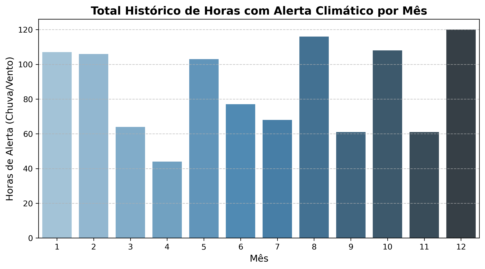
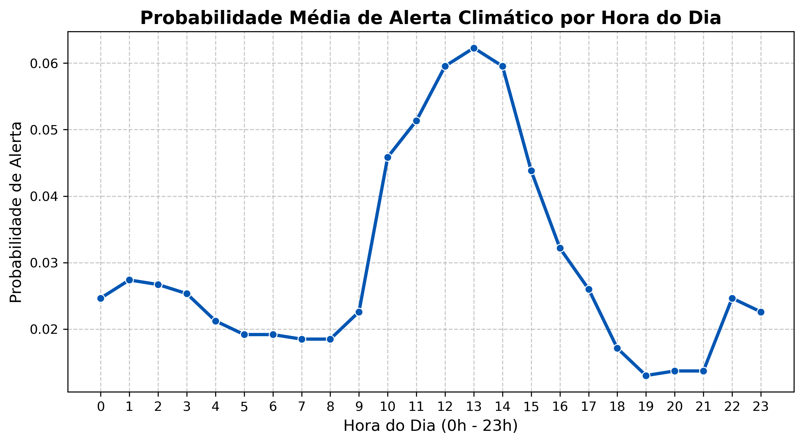
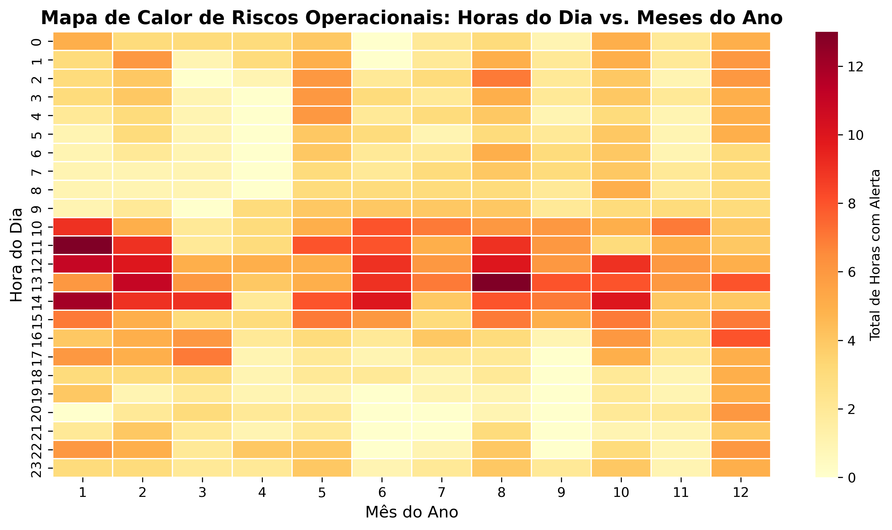
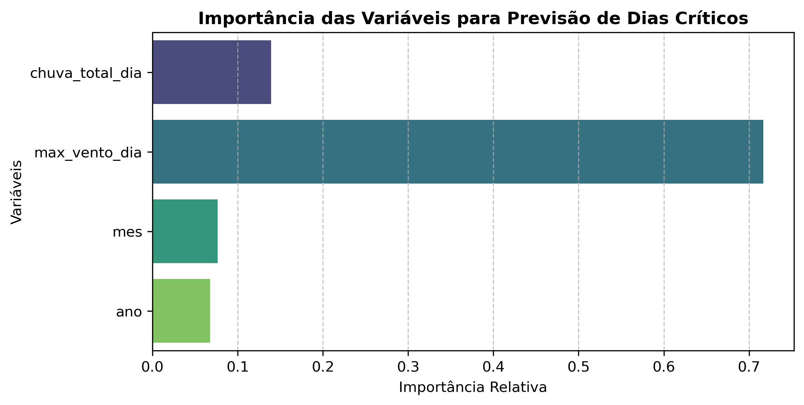

Análise de Risco Climático para Obras
Gestor de Operações e Negócios Orientado a Dados
Pipeline analítico de ponta a ponta — da ingestão automatizada de dados meteorológicos históricos até a modelagem preditiva com Machine Learning — para antecipar paralisações e desvios de cronograma causados por intempéries climáticas na região de Cubatão / Baixada Santista (SP).
Toda a análise parte de uma base auditável e reprodutível, ancorada em coordenadas geográficas reais e em uma API pública de dados meteorológicos históricos.
Município de Cubatão e região da Baixada Santista / SP. Região caracterizada por forte pluviosidade sazonal e suscetibilidade a ventos costeiros e rajadas severas.
Lat: -23.8931 · Lon: -46.4244
Open-Meteo Historical Weather API — séries horárias reais consolidadas de precipitação acumulada (mm/h) e rajadas de vento (km/h).
Notebook, scripts, base tratada e todos os artefatos gerados estão versionados e disponíveis publicamente — garantindo auditoria, reuso e reprodução integral do estudo.
Ver repositório no GitHubQuatro etapas encadeadas transformam dados meteorológicos horários em critérios técnicos de decisão para a gestão de cronograma e alocação de equipes em campo.
Extração temporal detalhada — anos, meses, dias da semana e ciclos horários de 24h — para capturar a sazonalidade e o comportamento diurno das chuvas.
Critérios técnicos de paralisação baseados em práticas de engenharia de obras: chuva horária ≥ 5,0 mm/h ou rajadas de vento ≥ 40,0 km/h.
Mapeamento de sazonalidade mensal, perfil de risco diário por horário e cruzamento em heatmap para identificar os "pontos cegos" e janelas críticas do cronograma físico.
Treinamento de um classificador supervisionado com XGBoost, mapeando variáveis diárias para prever a probabilidade de dias críticos com risco de paralisação.
Após o tratamento e aplicação dos limiares operacionais, a base consolidada permite quantificar a exposição do cronograma ao risco climático.
Das 35.064 horas analisadas entre 2022 e 2025, 1.035 horas ultrapassaram pelo menos um dos limiares técnicos de paralisação — chuva horária elevada ou rajadas de vento severas. Esse volume representa janelas concretas de risco para execução de serviços externos como terraplenagem, fundações e montagem.
Identificar quais meses do ano concentram os maiores volumes de chuva e incidência de alertas, permitindo ao gestor planejar etapas críticas (como terraplenagem e fundações) para os períodos de menor vulnerabilidade.

Gráfico de barras com escala Blues. Eixo X: mês (1–12); Eixo Y: total acumulado de horas com alerta de paralisação no período completo.
sazonalidade_mensal_alerta.pngMapear o comportamento das intempéries ao longo das 24 horas do dia. Em regiões tropicais, temporais tendem a se concentrar no período da tarde devido ao aquecimento diurno, impactando diretamente o turno de trabalho das equipes.

Gráfico de linha com marcadores. Eixo X: hora (0h–23h); Eixo Y: probabilidade média de ocorrência de alerta.
ciclo_diurno_risco.pngCriar um mapa de calor cruzando meses e horas, revelando visualmente as janelas exatas de maior criticidade operacional — os chamados "pontos cegos" do cronograma — para tomada de decisão gerencial.

Heatmap com escala YlOrRd. Eixo X: mês do ano; Eixo Y: hora do dia; cor: total acumulado de horas com alerta. Revela os cruzamentos (mês × hora) de maior criticidade.
heatmap_risco_mes_hora.pngDesenvolvimento e treinamento de um modelo preditivo capaz de classificar dias críticos para a execução da obra, utilizando métricas de desempenho (Acurácia, Matriz de Confusão e Feature Importance) para demonstrar domínio técnico em ciência de dados aplicada à gestão de operações.
Métricas extraídas diretamente do classification_report do modelo XGBoost.
| Classe | Precision | Recall | F1-Score | Support |
|---|---|---|---|---|
| 0 — Dia não crítico | 0,98 | 0,97 | 0,98 | 264 |
| 1 — Dia crítico | 0,77 | 0,83 | 0,80 | 29 |
| Accuracy | — | — | 0,96 | 293 |
| Macro avg | 0,88 | 0,90 | 0,89 | 293 |
| Weighted avg | 0,96 | 0,96 | 0,96 | 293 |
Variáveis utilizadas pelo modelo e sua contribuição relativa para a classificação de dias críticos.

Gráfico de barras horizontal com escala Viridis. Variáveis: chuva_total_dia, max_vento_dia, mes, ano.
O modelo equilibra Precision — evitando alarmes falsos que geram ociosidade desnecessária — e Recall — garantindo alta cobertura para não deixar dias críticos passarem despercebidos.
Com acurácia global de 96% e F1-score ponderado de 0,96, o classificador fornece uma base robusta para o planejamento de curto prazo (24 a 72 horas).
As métricas e a saída probabilística do modelo servem como gatilhos gerenciais concretos no dia a dia da operação.
O modelo prioriza o equilíbrio entre Precision (evitar alarmes falsos que geram ociosidade desnecessária de equipes) e Recall (garantir alta cobertura para não deixar dias críticos passarem despercebidos).
Saída probabilística contínua que serve como gatilho gerencial para o planejamento de curto prazo — especialmente nas últimas 24 a 72 horas que antecedem a execução.
Este estudo desenvolveu um pipeline analítico de ponta a ponta — desde a ingestão automatizada de dados meteorológicos históricos até a modelagem preditiva com Machine Learning — para antecipar paralisações e desvios de cronograma causados por intempéries climáticas.
A integração entre dados meteorológicos históricos de alta resolução, critérios técnicos de paralisação bem definidos e modelagem preditiva com XGBoost produz um framework replicável de gestão de risco climático — capaz de transformar variáveis ambientais em decisões operacionais concretas.
Recomendações para expandir ou testar novas hipóteses com este modelo em projetos futuros.
Substituir a divisão aleatória por uma validação que respeite estritamente a ordem cronológica (TimeSeriesSplit), evitando qualquer viés de data leakage.
Incorporar umidade relativa, pressão atmosférica (indicadora de frentes frias) e médias móveis de precipitação dos 3 dias anteriores (para estimar saturação e encharcamento do solo em terraplenagem).
Cruzar as previsões diretamente com dados reais de avanço físico de cronograma e apontamentos de horas paradas para calcular o impacto financeiro exato (Custo de Ociosidade).